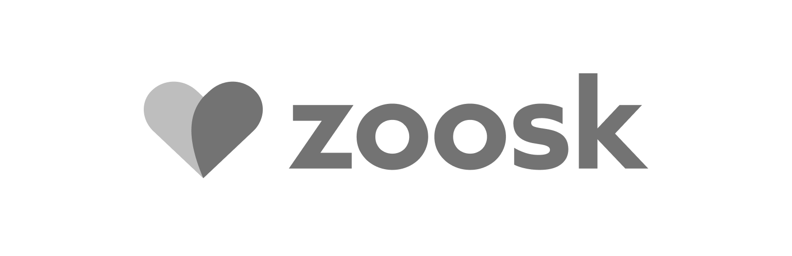
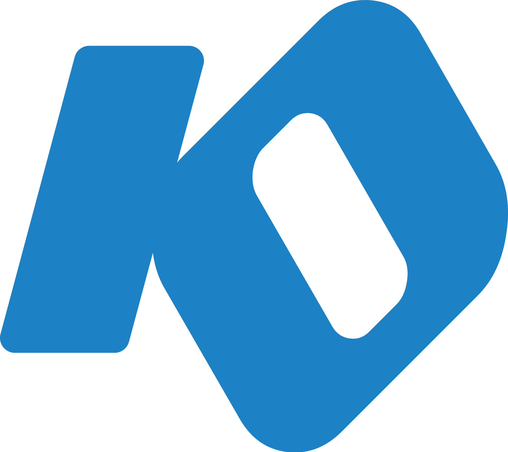
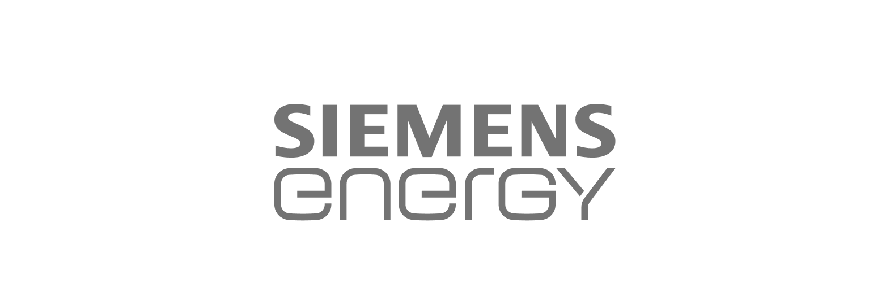
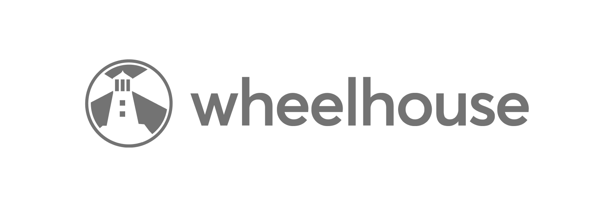
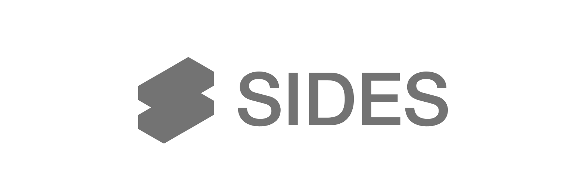
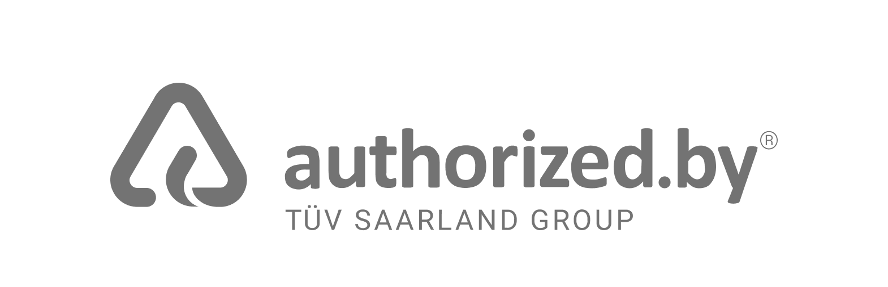
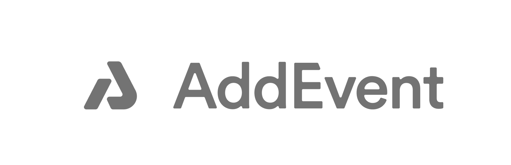
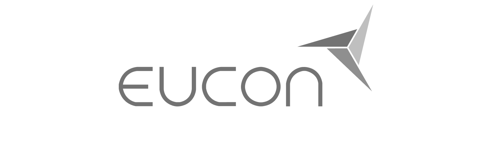
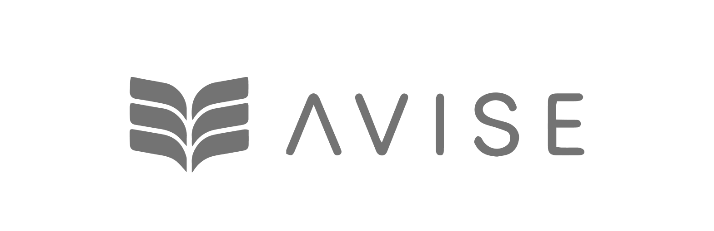
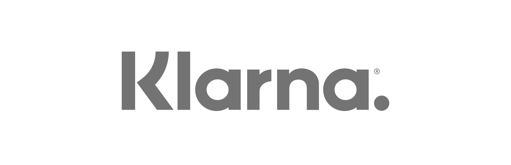

Before
Disconnected tools and information
Information is scattered across tools and documents. People spend time searching, switching systems and piecing together what they need.
Engineering, cybersecurity and operations specialists who own what they deliver.
Exploring AI? Start with the AI Discovery Lab.











Bringing company records and past interactions together for Permira’s private equity research, with traceable sources and access defined by role.
AI-BOS turns a business process into an AI-assisted workflow, with defined information sources, permissions, human responsibility and a record of what happened. AI-BOS is Yopeso’s framework for designing, building and running AI inside the processes a business already uses.
Models, tools and integrations are selected around your workflows and systems, and can evolve as your needs change. Each implementation uses the parts of the framework it needs.
Information is scattered across tools and documents. People spend time searching, switching systems and piecing together what they need.
AI-BOS connects existing tools, AI-assisted tasks and business rules into a defined workflow, with permissions, review points and monitoring built in.
People work from one connected view instead of gathering context by hand, and tasks move without waiting on someone to assemble the inputs.
The AI Discovery Lab starts with a real process. Together, we examine the workflow, the information it relies on and the decisions people make, then agree the right next step.
Explore the AI Discovery LabMost projects need more than one discipline. We bring the right skills together around your work, so specialists collaborate with each other and with your team.
See what our clients needed, what we built together and what changed as a result.
Yopeso contributed to an AI research assistant for private equity research.
Yopeso helped build a financial assessment platform with AI-assisted document processing and adviser review.
We redesigned the onboarding steps members follow after signing up, so they can find and start their first workout.
We start with what you need to achieve and build the team around it. The team learns your product, tools and way of working. We agree responsibilities with you before delivery begins.
Practical ideas on adopting AI, improving software and delivering change.
How to identify a useful starting point by looking at everyday tasks, available information and the people involved.
How to decide what to improve first, based on business needs, technical constraints and the systems people rely on.
The roles, responsibilities and everyday habits that help internal and external teams deliver together.
Remote-first, with teams across countries. Take ownership of your work, ask for support when you need it and learn through real projects.